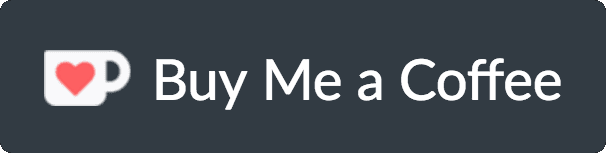

Batch Snippets Converter
This deliberately
ugly
website is created for batch creating or generating snippets in
visual studio code (also named vsc), sublime text and atom.
For editor to editor conversion, it's very important to follow the editor's default format but with tab = 2 spaces
Raw code conventions (click
ConvertToVsc
to see how it works)
# prefix
trigger
code
Input or paste your raw code according to the conventions stated above

ConvertToVsc
ConverToSublime
ConvertToAtom
VscToSublime
VscToAtom
SublimeToVsc
SublimeToAtom
AtomToVsc
AtomToSublime
copyRightToLeft
CopyRightWindow
Click copy to get your converted snippets